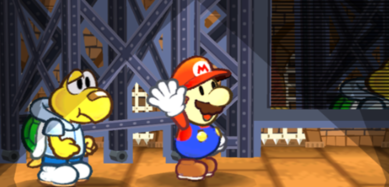
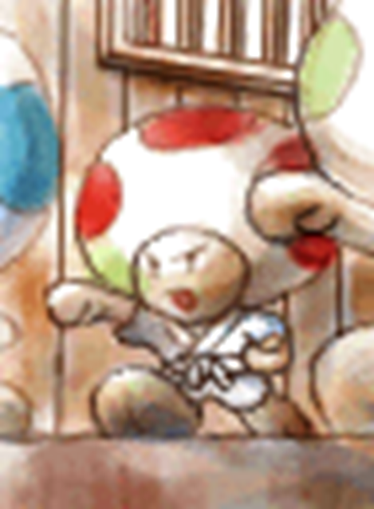

Skills in Detail
Table of contents
- Aim - Item Attacks
- Athletics - Fleeing
- Coordination - Swapping
- Guard - Reducing Damage
- Heal - Recovery
- Crafts - Working from Scratch
- Crafts - Enhancing and Mixing
- Magic - Spontaneous Spells
- Trickery - Dodging
- Cheer - Cheering People On
- Perform - Appeals
- Perform - Stylish Moves
- Steady - Resisting Effects
Typically, Skills have simple applications, and the outcome of any one check will depend on the Techniques used or the situation it's made in.
Sometimes though it's useful to have hard-and-fast rules for more complicated effects. The Skills suggested here should be considered the default, though depending on the situation, other Skills may be appropriate.
Aim - Item Attacks
Usually, using consumable Items is fairly straightforward; you take an action to use an Item's effect, and no check is required.
However, if you put in some extra effort, you can get a little more out of your Items.
Make an Aim check (or other appropriate Skill) alongside your Item action.
Each Grade of Success earns a point you can spend on any of the following bonus effects; however, be warned that any result lower than Great has a risk of backfiring as you throw caution to the wind. It's up to the GM exactly what that risk looks like or how likely it is.
- 1: This action is safe, and suffers no risk of backfiring. Has no effect on Great or higher results.
- 1: The Item adds ¼ of its damage onto its total damage; the Item must deal damage in order to choose this effect.
- 1: Increase the Status Level of one of this Item's Statuses by 1.
- 1: Increase the duration of one of this Item's Statuses by 1 turn.
- 2: Add an appropriate Status onto this Item's effect, starting at Status Level 1 and lasting for 3 turns.
- 2: The Item isn't consumed during this action; it either remains useable or is in some fashion recoverable, but you may have to wait for a spare moment to retrieve it.
Aiming your Items may be risky without proper training, but sometimes that little bit of extra damage is worth the risk. Besides, it's satisfying to really nail a bad guy with whatever you can throw at them.

Athletics - Fleeing
Sometimes you need to get away from a fight – but it's never easy.
To make a clean getaway, you need a Grade of Success for each combatant trying to stay on your tail or otherwise keeping you in the fight. Regardless, you always need at least a Great result.
Keep in mind that just getting away from a turn-based battle doesn't mean you're in the clear – you might just be turning a fight scene into a chase scene!
Coordination - Swapping
In battle, you sometimes want – or need – to swap places with an ally. This action doesn't require any checks, but if both players make a Coordination check with at least a Great result, this becomes a free action!
Guard - Reducing Damage
In battle, you can use Guard to reduce damage from incoming attacks. Either on your turn (as an action) or at the end of the round (as a reaction, in response to incoming attacks), make a Guard check.
If you choose to Block, you can't Dodge incoming attacks in the same round, unless an Item or other effect would allow it.
- Blocking
For each Grade of Success, you can ignore 1 point of damage this turn.
You can choose which attacks have their damage reduced at-will.
If you Guarded as an action, you also receive +1 Defense for each Grade of Success until next round.
If you reduce an attack's damage to 0 by blocking, and no Weaknesses apply, you can't suffer any Status effects from it, which might otherwise apply if you're simply tanking it with Defense.
Bear in mind though that the effects of your Weaknesses still apply, even if you reduced the initial damage to 0.Example: Blocking
A Bob-Omb is attacked by a Fire Bro's fireball, dealing 2 damage, and a Paragoomba's dive, dealing 1 damage.
The Bob-Omb reacts by blocking, and gets a Good result, allowing them to block 2 points of damage.
The Bob-Omb can block the Fire Bro's initial attack completely, but they still have a Weakness to Fire, so they have to take an extra +2 damage from their Weakness, and then 1 damage from the Paragoomba.
Blocking helps protect you from all manner of attacks – even if they would pierce through your Defense. Keep in mind though that you get one Guard check to resist all attacks for the round – the more pressure you're under, the harder it'll be to shrug off the damage!
- Superguard
If you've reduced an attack's damage to 0 in any way (such as by blocking or through your Defense), blocking it with one more point of damage reduction allows you to make a Superguard against that attack.
Superguards are more potent blocks, allowing you to completely ignore all damage and Statuses from the attack and even ignore your own Weakness!
Better still, you can interrupt your attacker by dealing damage, stopping them from making more attacks. If the attacker struck you in melee, you interrupt any more attacks they would have made and deal 1 Piercing damage back at them. And if they attacked at range, you can reflect the full attack's damage back at them!Example: Superguard
A Koopa is attacked by a Goomba's leaping headbonk, dealing 1 damage, and a Clubba's melee attack, dealing 3 damage.
The Koopa has 1 Defense, and blocks as a reaction with a Good result; in between their Defense and their Guard result they could block all damage, but they have a Weakness to Aerial attacks. The Goomba could flip them over and completely expose them to the Clubba's attack!
Instead, the Koopa Superguards the Goomba's attack with one Grade of Success, interrupting it and letting them ignore their Weakness. Then they can keep their Defense and block the Clubba's attack, reducing damage to 1.
When you're especially confident in your Guard checks, Superguarding lets you turn the tables! Sometimes it's actually more valuable than just Blocking or Dodging an attack, so be sure to consider your options!


Heal - Recovery
Recovering in Paper Story is generally very simple; most of the time, getting some rest is enough to fully restore HP and FP and recover from Status effects.
However, if you need to recover in the field, or want to use a healing Item more effectively, you can make a Heal check.
- First Aid
As an action, make a Heal check; each Grade of Success restores 2 HP to the target and/or reduces a Status' duration by 1 turn.
However, First Aid is only really useful as an initial response – each time you perform First Aid on a target, the required Grades of Success increase by 1 until they get some rest.
If you fail a Heal check like this, you instead cause them to lose HP equal to ½ your Power. Or worse, if you fail spectacularly.Example: Recovery
After a tough fight, a Dayzee's ally is injured and still suffering from a poison for 4 more turns.
The Dayzee makes a Heal check to administer First Aid, with a Good result.
They're able to restore 4 HP and reduce the poison to 2 turns.
In the time it takes to perform First Aid, their ally suffers from another turn of poison (reducing the duration to 1 turn) – the Dayzee makes another Heal check, but only gets a Nice result. Because they've already administered First Aid once, this isn't enough, and they end up hurting their ally instead.
- Administering Medicine
When using an Item to restore a target's HP or FP, you can make a Heal check alongside your Item action; each Grade of Success adds a quarter of the HP/FP restoring properties of the Item to the target. This includes all healing applications, including healing over time like Slow Shrooms or Gradual Syrups, but the Item has to already restore HP or FP respectively.
If you fail a Heal check like this, you just waste the Item; if you fail spectacularly there might be worse consequences, too.Example: Medicinal Aid
In the middle of a tough battle, a Boo wizard is seriously injured and low on energy. Their Squeek ally pulls out a Honey Mushroom for them, which would heal 5 HP and 5 FP.
They use the Honey Mushroom on their Boo ally, and try to boost it with a Heal check, earning a Good result. For each Grade of Success, they add ¼ of 5 to HP and FP, which rounded down would be 1.
So for 3 Grades of Success, they add +3 HP and +3 FP, for a total of 8 HP and 8 FP.It's difficult to find the time in battle to heal. Usually it's better to prevent damage by focusing on your attacks, and to worry about healing afterwards; but if you neglect your health, you'll be sure to regret it further down the line
Crafts - Working from Scratch
Crafts (and other appropriate Skills) can be used to develop useable products from raw materials, which may otherwise be useless.
First, choose an Item, Power-Up, Badge or Gear you want to make and have the materials for.
A Nice result is enough to make something with an equivalent value of 5 Coins; for each Grade of Success earned, you can double the value range of the Items you can make, as follows:
- Nice!: 5 Coins
- Good!: 10 Coins
- Great!: 20 Coins
- Wonderful!: 40 Coins
- Excellent!: 80 Coins
- Unbelievable!: 160 Coins
Failure consumes all materials involved and produces a Mistake; a useless Item that may provide only a severely restricted form of the intended effect, or something much worse. Critical Failure is bound to create even worse Mistakes.
Example: Crafting Gear
A Koopa smithy wants to smith a Super Hammer. Super Gear costs a whopping 400 Coins, so this is a tall order, but it's well worth the effort.
They earn a Wonderful result, for an equivalent of 40 Coins; an impressive outcome but only a fifth of the way there.
They try to push themselves to keep working, and earn a Great result on the second check; this only adds on 10 Coins, for a total of 50.
They decide to set the project aside before they make a Mistake, but take pride that their new Gear is 1/8 complete.Once you've created something or otherwise know how it's made, it becomes easier to craft, with value starting from 10 Coins on a Nice result.
In any case, one attempt to Craft can only produce one Item, Gear or Power-Up at a time, and can't produce enhanced or mixed Items.Depending on the quality of the materials you use, you may be able to craft Items with less Grades of Success than normal; however, appropriate materials must always be sourced and used up.
As a general rule, when it comes to materials:
- Items can be made with common materials which can be sourced on the cheap in most settlements, costing no more than half the Item's value.
- Badges and Gear require more valuable and rarer materials, which may take more work to find on the market, or require the crafter to seek them out in the field.
- Power-Ups require some form of magical charge, either taken from rare materials, or crafted with Magic assistance (as a Skill Substitution or Skill Enhancement; if you have an ally assisting, you don't necessarily have to do the magic yourself).
If you don't achieve a high enough result, you can either settle for a similar product you could have made with the materials you used instead (such as settling for a Mushroom over a Super Mushroom), accept failure and make a Mistake, or take the time to make another check; each additional check made in this way takes more time, and successive checks without rest require a higher Grade of Success.
Tracking down the materials for crafting can be an adventure in and of itself, taking you to far away places with all sorts of exotic goods.
Crafts - Enhancing and Mixing
In addition to creating things from scratch, Crafts (and other appropriate Skills) can be used to enhance or combine consumable Items.
For each Grade of Success, you can choose one of the following effects to apply to the new Item:
- Consume another Item, adding all of its effects (HP, FP, gradual recovery, damage, Status, etc.) to the new Item, using the first Item's targets.
No matter what, you can't combine more than two Items at once.- Increase an existing HP and/or FP recovery effect by 2.
- Increase the Item's damage by 1 (if it would deal damage).
- Add an Element or replace an existing Element, changing the type of damage dealt.
- Add a Status, or increase an existing Status Level by 1.
New Statuses have the same duration as the original Item's Statuses (if applicable), lasting up to a minimum of 1 turn.- Increase the duration of all the Item's Statuses and other effects by 1 turn.
Failure instead consumes all Items involved and produces a Mistake; a useless Item that may provide only a severely restricted form of the intended effect, or something much worse. Critical Failure is bound to create even worse Mistakes.
Cooking can be a costly exercise, but well worth it! Stronger attacks, better healing, and simply condensing multiple Items into one Inventory slot are all good reasons to top up when you're in town.
Once you've created an Item or otherwise know its recipe, it becomes easier to make it again, requiring half as many Grades of Success (to a minimum of Nice).
However, you have to use the same method when following a recipe – a chef sweetening an Ice Storm to make an Icicle Pop is very different to an alchemist strengthening it to make a Blizzard Storm, for instance.Treat the new Item's Coin value as equivalent to ½ of its component Items' values, +5 more Coins for each Grade of Success required to make it (not accounting for the halved Grades of a known recipe).
Including a previously enhanced or mixed Item in your crafting adds one more Grade of Success to the recipe's difficulty for each time an ingredient was previously enhanced or mixed, as it becomes a more volatile ingredient.
Example: Mixing Items
A Dayzee wants to combine some delicious Honey Syrup with their own special recipe, a Fried Sparkshroom (combining a Super Shroom and a Volt Shroom). They make a Crafts roll, and earn a Good result.
Since the Fried Sparkshroom was previously mixed together, they need one more Grade of Success to go ahead with this recipe.
They have just enough Grades to finish off the recipe, slathering the mushroom to make a Glazed Sparkshroom, which restores 10 HP, 5 FP and bestows the same Contact Trait as a Volt Shroom.
If they wanted to sell this invention, it would have an equivalent value of 27 Coins (15 from the Fried Sparkshroom, 2 from the Honey Syrup and 10 from their Good result).
Just be careful you don't take things too far. You wouldn't want that powerful Superbombomb you've been working on to backfire once you take it into the field, would you?


Magic - Spontaneous Spells
Magic's most powerful quality is its versatility – the ability to do anything!
These rules apply whenever you would cast a spell that's not already a key part of your repertoire, like a Technique, representing the challenging art of spontaneous casting.Whatever kind of spell you cast, you choose beforehand how much of your Magic dicepool to use; this includes dice you receive from your Skill, your relevant Specialisations and Boosts to your Magic skill.
It doesn't include situational bonuses, though, like the extra dice you'd get for someone's assistance.For each die included in your pool, you pay 3 FP.
If you have a relevant Specialisation, you pay 2 FP per die instead, and if you have a relevant Efficient trait, you only pay 1 FP per die.
No matter the circumstances, you always pay at least as much FP as one die would cost.
Regardless, the final roll is modified by your Spirit as normal for a Magic check.Keep in mind though that no matter what, Magic spells can't be used to gain or bestow FP or SP (Exceptional Results aside).
Skill Substitution
Magic can be used to emulate other skills, such as Athletics, Notice or Bully, by making a Magic check instead – completely replacing the check you'd make with your Magic pool.Skill Enhancement
As long as you would normally have dice for the check, you can enhance it with Magic; this works as if you made the check, and were also assisted by yourself using your Magic.
You pay FP to access your Magic dicepool as normal, then add ½ of that dicepool (to a minimum of 0) and your Spirit onto the main Skill check.
Even if the main check used Spirit, you can still add your Spirit again!Example: Enhanced Skills
A Koopa sorcerer comes under attack! While they have 2 Heart and 1 Guard, they're much better at spellcasting, with 3 Spirit and 2 Magic.
They can pay 6 FP to use their two Magic dice; as they're assisting themselves, they add half of that onto their main Guard dicepool, for +1d6 and a total of 2d6.
The dice come up 1 and 2; since they can use both their Heart and their Spirit, this is enough to boost both dice to 4's for a Good result.
Enchantments
Magic can be used to temporarily enchant targets with Personal Traits, such as Fly, Invisibility or Mimicry.
Make a Magic check and choose a Personal Trait; if you succeed, the target receives the chosen Trait, lasting for 1 turn for each Magic die you used.
Numerical values of the Trait (e.g. Resist, Contact damage, Status Level) are all set to 1, even if they would normally be higher.
For each Grade of Success you earn, you can choose one:
- The Enchantment lasts for one more turn.
- The Enchantment includes another Trait.
- A numerical value of one of the Traits increases by +1.
- One of the Traits includes one more element (if applicable).
- The Enchantment affects one more valid target.
If the target already has a Trait they would receive from this enchantment, the enchantment temporarily overrides their Trait; this can be used to substitute existing Immunities and Resistances.
You have to specify any particulars of the Trait, such as the elements affected or the exact Contact effect, when you cast the enchantment; these effects should be based on existing Personal Traits, with the GM having final say on what's possible.
Any FP costs associated with the Trait cost double FP; however, you can substitute that with whatever FP you spent casting the enchantment, for as long as the enchantment lasts.
As an added bonus, any action taken or checks made to initiate the Trait (such as starting to fly or transforming with Mimicry) use the action and Magic check of the enchantment instead. Trying to take these actions after being enchanted requires the target roll as normal, though.Example: Enchanting Traits
A Goomba enchanter is sneaking along behind their Boo ally; their friend is able to fly and turn invisible, and not wanting to get left behind, the Goomba decides they should too.
They decide to be conservative and pay 6 FP for two of their Magic dice.
They get a Good result, and choose to give themselves the Invisibility Trait; they also add in the Fly Trait, and make it last an extra turn, for a total of 3 turns. They immediately turn invisible and start flying.
Ordinarily it would cost 2 FP to turn invisible for a turn, and 2 FP for each turn after that; but because they've already spent 6 FP, they're already covered for as long as the enchantment lasts!
- Curses
Similarly, Magic can be used to temporarily neutralise the target's qualities and other Personal Traits.
Make a Magic check and choose a quality the target has (e.g. a Personal Trait, a Status delivered by their attack, or an elemental affinity of their attack); if you succeed, the target suffers a Curse as if it was a Status, temporarily neutralising their ability to use that quality in some fashion. They can recover as normal, such as with Items or Steady, and players can make a Steady check to resist as a reaction, just like any other Status.
The Curse lasts for 1 turn for each Magic die you used.
For each Grade of Success you earn, you can choose one:
- The Curse lasts for one more turn.
- The Curse includes another quality.
- The Curse affects one more valid target.
Example: A Curse on Ye
A Squeek wizard is beset on all sides by a storm of 4 Paratroopas – and their allies are firmly set on the ground.
They attempt to bring the enemy down to earth, spending 8 FP to use their full 4 dice from 3 Magic and a Specialisation in Curses, earning a Great result.
They choose to remove the Paratroopas' ability to fly, equivalent to the Fly Trait. With their Grades of Success, they're able to ground each of their enemies for 4 turns.
Curses come in many forms, but usually, they're a horrible time. There's not much you can do besides tough it out.
- Technique Spells
Magic can even be used to improvise Techniques on the fly! Instead of making any Technique checks, you make one Magic check to conjure up an effect; as long as you succeed, this Technique begins with 1 Grade of Success in any of its Primary or Secondary checks, and an effective FP cost of 0.
For each Grade of Success you earn, you can choose one:
- Add 3 FP to the final Technique's effective cost.
- Add a Grade of Success to the outcome of the Technique's Primary and/or Secondary Checks.
You can select up to your dicepool in positive Traits, and up to your dicepool in negative Traits, as long as the FP cost for the combined Traits doesn't exceed the effective cost.
Finally, you can add Indirect, Ranged and/or Harmless as bonus Traits for no additional cost; this is simply the nature of Magic.
You don't pay the effective cost, or make any further checks – the Technique simply resolves with whatever Traits and Grades of Success you chose to give it based on your Magic check. Since it doesn't make its own check, you can't benefit from its results on top of your own check (such as for Exceptional Results).
Example: Improvised Spells
A Dayzee witch wants to cast a hex on their enemies, but doesn't have the right Techniques for the job. Instead, they improvise.
They spend 8 FP to use their full 4 dice from 3 Magic with a Specialisation in Hexes, and earn a Great result.
They can add up to 4 positive Traits, and up to 4 negative Traits. They want the hex to stop all their enemies in their tracks, so they add Group, Lengthen and Daze x3, giving the hex an effective cost of 8 FP.
They don't need it to deal any damage though, and they're sure it will work without a hitch; so they give it the negative traits Harmless and Commitment, reducing the effective cost to just 3 FP.
Finally, they take their 3 Grades of Success; 1 is spent increasing the FP pool for the Technique to 3, which is enough to pay the effective cost. The last 2 are spent to give the Technique a Great Grade of Success.
The end result is a Technique that Dazes (3) their enemies for 4 turns, giving them plenty of time to act.

Trickery - Dodging
In battle, you can use Trickery to completely side-step attacks.
If you attempt to Dodge, you can't also Guard against attacks in the same round, unless an Item or other effect would specifically allow it.
A Great result allows you to dodge all attacks from one target. For each additional Grade of Success, you can dodge attacks from another target.Example: Dodging
A Squeek is attacked by a gang of three Hammer Bros! They can't handle their powerful hammer throws, and decide to Dodge instead.
They make a Trickery check and earn a Wonderful result. They're able to completely dodge the attacks of the first two Hammer Bros, but have to take the last Hammer Bro's attacks head-on.
You don't need to Dodge attacks if you can prevent them! Invisibility effects and Secure Techniques are great for getting around attacks, if used carefully. And if you can avoid a fight in the first place, even better!

Cheer - Cheering People On
You can use Cheer as an action to replenish an ally's FP or SP.
Choose FP or SP – if you succeed the target restores +2 points, and an extra +2 for every additional Grade of Success you achieve. Keep in mind though that if you restore any SP during this check, you can't get any more SP from Exceptional Results.
Repetitive cheering gets to be a bore, with each follow-up check requiring a higher Grade of Success. After you get some rest, or the session ends, the difficulty reverts back to normal.
Perform - Appeals
The Stars watch over everything, like an audience watching the stage. Heroes, villains and all creatures in between can count on their favour if they play to the crowd. Whether it's through prayer, focus or showboating, the Stars reward you for great showmanship.
Make a Perform check; you don't receive any extra SP for Exceptional Successes, but if you succeed you receive 2 SP, plus an extra +2 SP per additional Grade of Success.
Repetitive Appeals get to be a bore, with each follow-up check requiring a higher Grade of Success. After you get some rest, or the session ends, the difficulty reverts back to normal.
All the world's a stage, so smile for the crowd! SP is always useful to have, so it can be worth investing in your appeals. You can even appeal outside of battle to prepare for the future!
Perform - Stylish Moves
Stylish Moves are risky gambits and fancy flourishes for little to no gain – but the crowd goes wild when you nail them, and the Stars reward such great showmanship.
When making a Stylish Move, once per round you can use Perform in place of your ordinary check – this can be any kind of check, as long as it doesn't normally use Perform. You can even make a Stylish Move when using Magic, though you still pay FP as normal.Your effective Perform Skill is limited by your value in the Skill being substituted, including any of its relevant Specialisations.
Any extra dice you'd receive for Perform, such as from your Badges or your Perform Specialisations, is added on after your Perform is limited.Nailing a Stylish Move is harder than usual, requiring one more Grade of Success than usual.
If you succeed you earn 2 SP on the spot, and double the SP you would have received from an Exceptional Result!Bear in mind though that if you commit to a Stylish Move, you can't spend the SP you would gain on Exceptional Techniques.
Example: Stylish Moves
A Dayzee with 1 Coordination and 3 Perform makes a flashy melee attack.
Since their Perform is higher than their Coordination, they can only use 1 of their Perform dice, but can add +1d6 for their Perform Specialisation in Stylish Moves, and have access to their full 3 Courage.
Ordinarily they'd need a Nice result to deal their full damage, but due to the difficulty of a Stylish Move, they need a Good result instead.
They earn a Wonderful result, much more than they needed!
In addition to the effects of their attack, they earn 2 SP for pulling off their Stylish Move, and double the SP they'd normally get from a Wonderful result – another 4 SP, for a total of 6.
Steady - Resisting Effects
Whether you're affected by a Status or resisting some other effect, Steady allows you to grit your teeth and bear it.
you're affected by a Status, with your result affecting that Status alone.
For each Grade of Success, reduce its Status Level and duration by 1 – Status Level can't be reduced lower than 1, but duration can be dropped to 0, negating the status!As an action you can attempt to remedy as many of your active Statuses as you want, affecting them all at the same time.
If your Steady check manages to lower all your negative Status' durations to 0, any excess Grades of Success instead make this check into a free action.Example: Steadying Yourself
A Squeek is bitten by a particularly deadly variety of Piranha Plant, which normally afflicts its prey with Lingering (5) for 5 turns.
When the Squeek is bitten, they get to make a Steady check as a reaction, and achieve a Good result – reducing it to Lingering (3) for 3 turns. At the end of the round, they take 3 damage, and the poison downgrades to Lingering (2) for 2 turns.
On their turn, the Squeek tries to get the poison under control. They take an action to Steady themselves, and achieve a Great result. They're able to reduce the duration down to 0 turns and negate the Status entirely. In fact, they have a spare Grade of Success, allowing them to make this into a free action!
Don't neglect your Steady, brave warriors! It's tempting to focus on your combat skills, but Steady is the only way to avoid a lot of Statuses. You can always make up for the experience you invest into Courage with more powerful Badges, and you'll get to look cool in the face of pressure like a zen warrior!